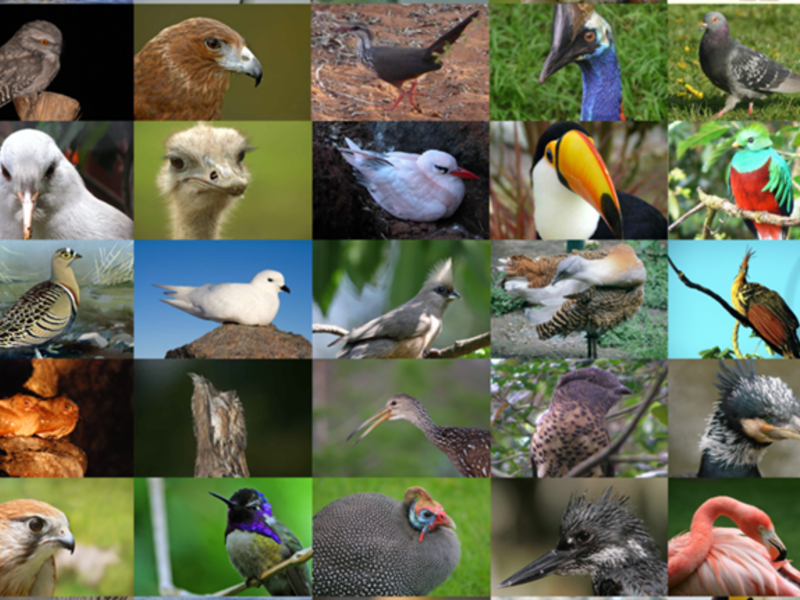

Bangladesh is a land of plenty and beauty. There are plenty of birds that have added beauty to the land. In this website, I will describe the common birds of Bangladesh as really important and should be known.
There are various kinds of birds. They differ in size, color, and nature. And so, they are broadly divided into four classes, namely, the teasing birds, the songbirds, the game birds, and the plundering birds. There are uncommon birds known as guest birds. They visit Bangladesh every winter. They come from far-off cold countries of the north.
Birds of Bangladesh coded for abundance, breeding, migration, wintering, endemic, rare, etc.; 2000 pages on birds, nature, birdwatching, where to go birding, birds and nature pictures, nature conservation, equipment, bird feeding, etc. Welcome to the birds of Bangladesh.
Bangladesh is home to an impressive number of species of birds that vary from residents, that stay all year around, to breeding birds, that spend a good part of the growing season in Bangladesh to raise their young, migrants who pass through Bangladesh with the seasons, to wintering birds who like to spend a good part of the winter in Bangladesh to escape colder conditions up north. While many species of birds are relatively common as they are part of the ecosystems of the state, it is always a thrill to stumble upon a rare bird or vagrant, that does not really form part of any the Bangladesh ecosystems. Maybe it got lost during its travels between its summer and winter residence or it got displaced by bad weather.
